Le domaine entier
- 43 + 8couchages et appoint
- 2gîtes indépendants
- 60 + 40places dans les deux salles
- 11places à l’écurie
Un domaine entier pour votre événement
Imaginez un lieu à la campagne, loin de tout et entièrement à votre disposition.
Deux gîtes autonomes, deux salles de 60 et 40 places avec leurs terrasses, une écurie et des espaces extérieurs à perte de vue : c’est ce que vous offre la privatisation du Gîte sur la Baume.
Mariages, cousinades, anniversaires, séminaires d’entreprise ou séjours équestres entre passionnés : le domaine s’adapte à votre projet, en gestion libre.

Ce que comprend la privatisation
- 2 gîtes indépendantsLa Cavalière (22 + 2 pers.) et Le Tilleul (21 + 6 pers.), avec leurs cuisines, leurs chambres et leurs salles de bain
- 43 couchages et 8 d’appoint11 chambres et dortoirs (dont une chambre PMR) et des canapés-lits
- Deux salles et leurs terrasses60 places à La Cavalière (avec vidéoprojecteur) et 40 places au Tilleul
- Une écurie de 11 places7 stalles, 4 boxes et un accès à la pâture
- De grands espaces dehorsPétanque, ping-pong, barbecue, terrasses et préau couvert
- Gestion libre ou traiteurVous cuisinez vous-mêmes ou vous faites appel à un traiteur : c’est vous qui choisissez
Idéal pour
Six façons de profiter du domaine entier : choisissez celle qui ressemble à votre projet.
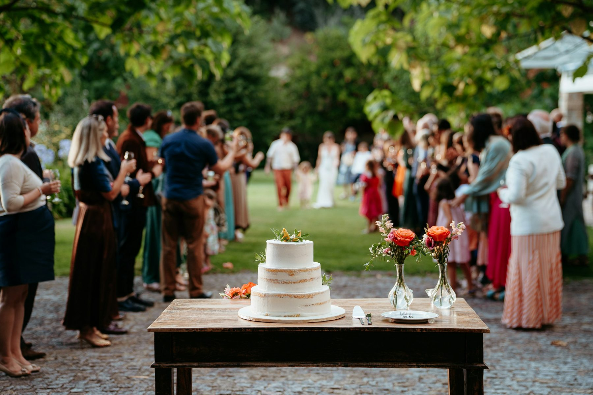
Mariages et fêtes de famille
La grande salle de La Cavalière pour 60 convives assis, celle du Tilleul pour 40 de plus, les terrasses pour le vin d’honneur et assez de couchages pour que vos invités restent sur place. Plus besoin de gérer les trajets.
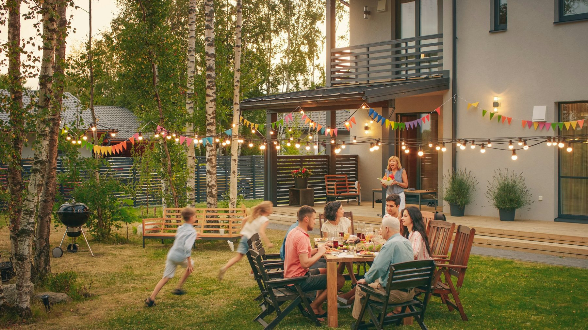
Cousinades et retrouvailles
Chaque famille s’installe dans le gîte de son choix et tout le monde se retrouve pour les repas, les jeux et les veillées : pétanque et ping-pong dehors, billard et baby-foot au Tilleul.
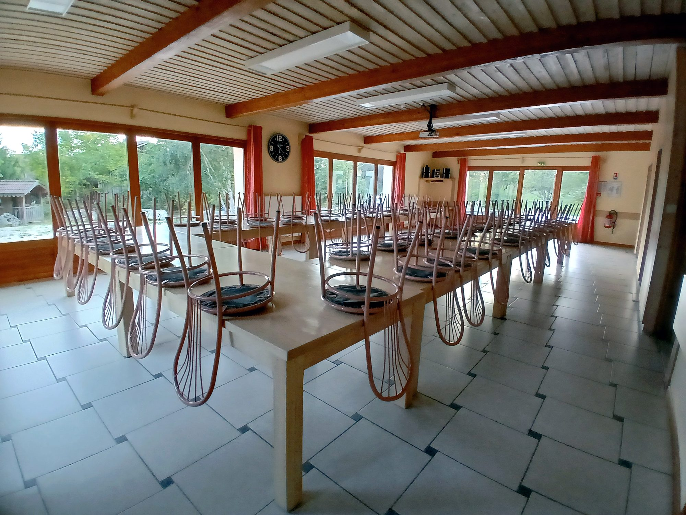
Anniversaires
Une grande salle pour le repas et les discours, des chambres pour tout le monde et la pelouse pour les jeux : vous fêtez jusqu’au bout de la nuit, personne n’a de route à faire.

Séjours équestres
Une écurie de 11 places intégrée à La Cavalière et un accès à la pâture : vous et vos chevaux logés au même endroit, pour les randonnées, les stages et les rassemblements.
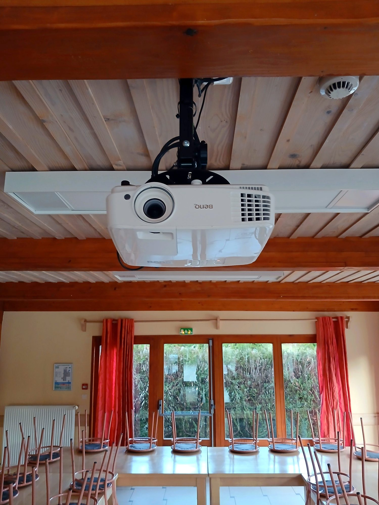
Séminaires et team building
Réunions, formations et ateliers dans la grande salle de La Cavalière, avec son vidéoprojecteur. Le calme de la campagne aide à se concentrer le jour et à se retrouver le soir, sans quitter le domaine.
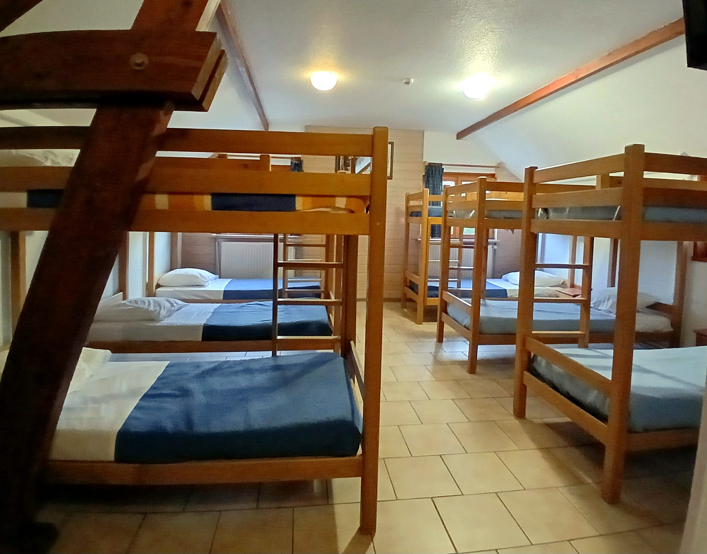
Classes, clubs et groupes encadrés
Des dortoirs, deux cuisines et beaucoup d’espace dehors, dans un lieu agréé Jeunesse et Sports et Éducation nationale : tout le groupe dort et mange sur place.
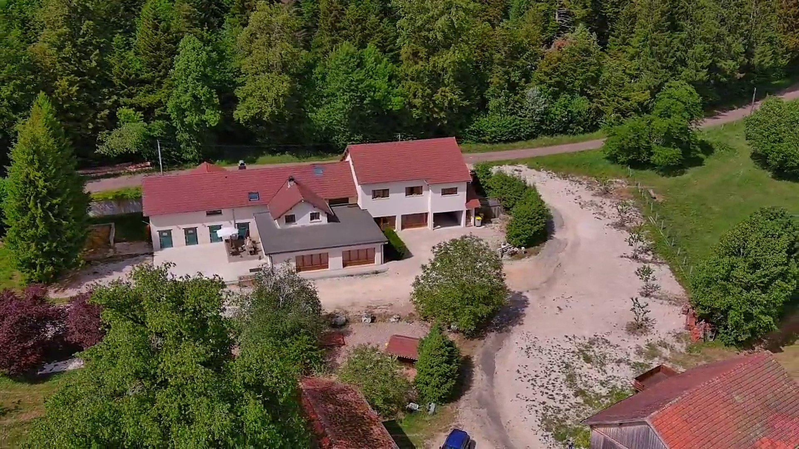
Les capacités en un coup d’œil
Tout ce que le domaine peut accueillir quand vous le privatisez.
| Couchages en tout | 43 et 8 d’appoint |
|---|---|
| La Cavalière | 22 et 2 d’appoint |
| Le Tilleul | 21 et 6 d’appoint |
| Salle de La Cavalière | 60 places assises |
| Salle du Tilleul | 40 places assises |
| Écurie | 11 chevaux |
| Chambre PMR | 1 (Le Tilleul) |
Le domaine en images
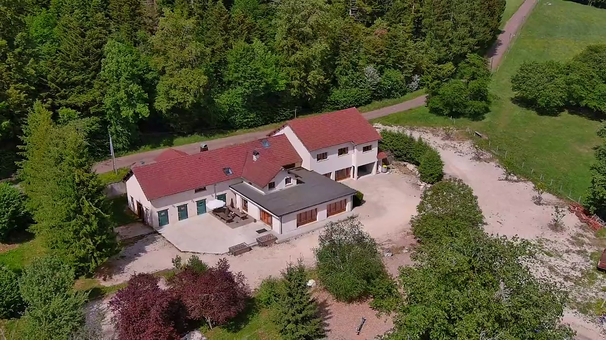

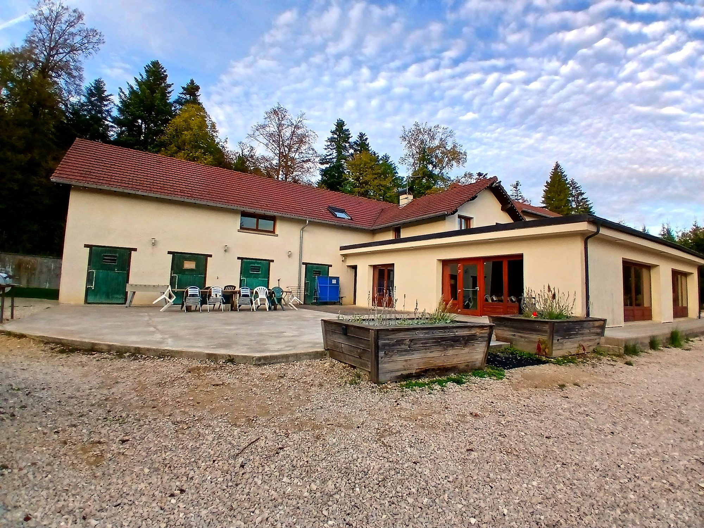
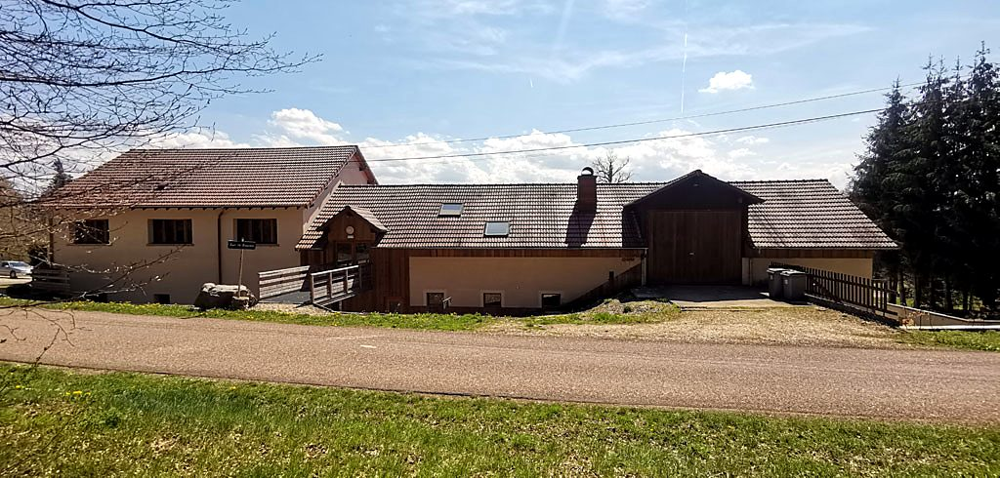
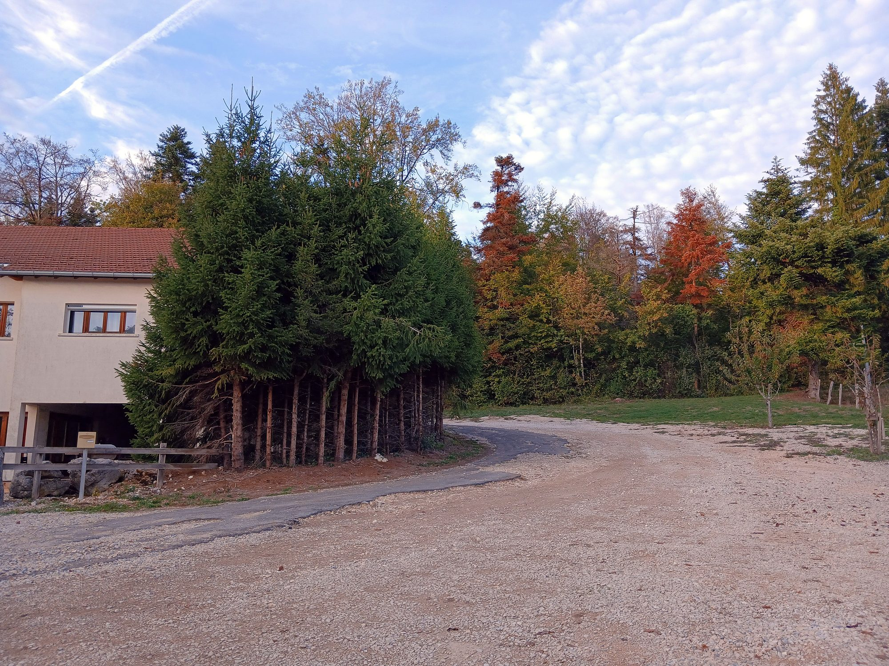
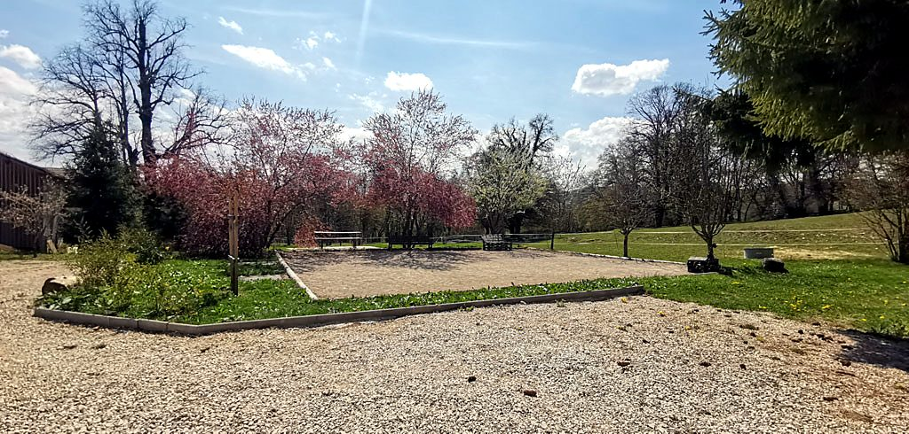
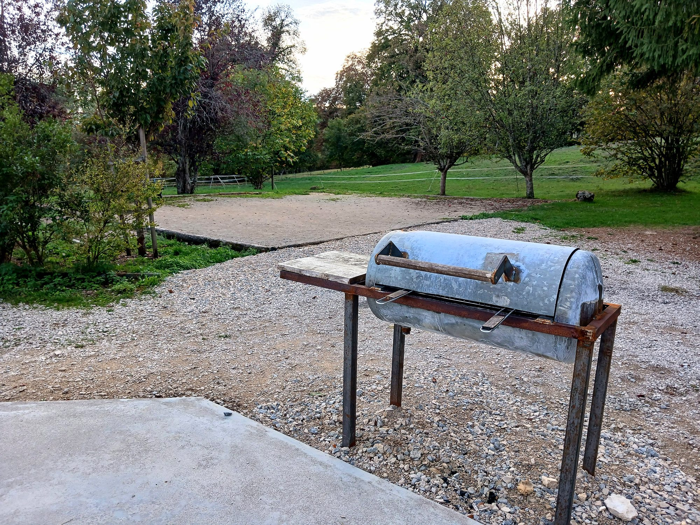
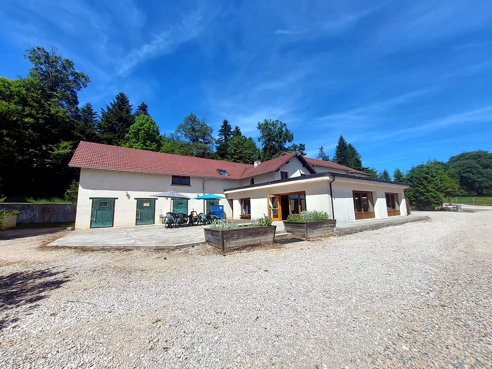


Comment se passe la location
Choisissez vos dates : le prix du séjour s’affiche tout de suite.
Les règles de location
- Le week-end se loue uniquement en forfait 2 nuits, du vendredi au dimanche
- Les nuits en semaine se louent du lundi au jeudi
- Vous louez un gîte entier, quel que soit le nombre de personnes
- Ménage de fin de séjour en option : 230 € par gîte
Compris dans le prix
- La taxe de séjour, l’eau, l’électricité et le chauffage
- Les draps, la literie et le linge de bain
- Le gel douche, le shampooing et le papier toilette
- Les produits ménagers, la vaisselle et le matériel de cuisine
- Le Wi-Fi, les lits parapluie, la chaise haute et le parking

Votre événement mérite un lieu d’exception
Privatisez le domaine pour votre prochain grand moment : Carole vous répond avec un devis.
Demander vos dates